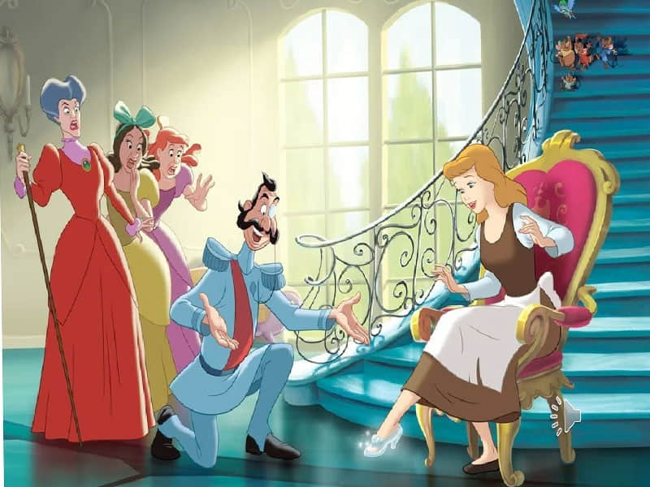

O gece Külkedisi uyuyana kadar ağlamış. Hayatının bir daha asla o geceki kadar harika olamayacağını düşünüyormuş. Ama bu doğru değilmiş. Ayakkabının diğer tekini sarayın merdivenlerinde bulmuşlar. Ertesi sabah Prens ev ev dolaşıp ayakkabıyı tek tek bütün genç kızlara denetmiş. “Bu ayakkabının dün gece karşılaştığım güzel sahibini bulamazsam yaşayamam,” demiş. Derken Külkedisi’nin evine gelmiş. Üvey kardeşleri ayakkabıyı denemişler, olmamış. Ayaklarına girmemiş bile. Prens çok üzgünmüş, çünkü uğramadığı sadece birkaç ev kalmış. Tam oradan ayrılacakken evin hizmetçisi dikkatini çekmiş. “Hanımefendi,” demiş Prens Külkedisi’ne, “bir de siz deneseniz?” “O mu deneyecek? Ne münasebet!” diye haykırmış üvey kardeşler. Fakat Prens ısrar etmiş. Külkedisi’nin ne kadar güzel bir kız olduğu gözünden kaçmamış. Tabii ayakkabı Külkedisi’nin ayağına kalıp gibi oturmuş. Prens diz çöküp Külkedisi’ne evlenme teklif ederken iki üvey kardeşe de öfke ve kıskançlıkla olanları seyretmek kalmış. Külkedisi Prens’in teklifini tabii ki kabul etmiş.
